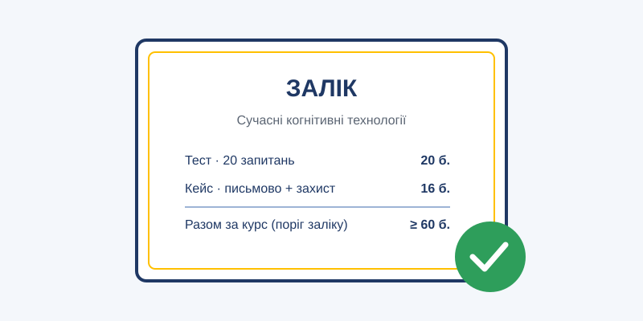

Модуль 5. Майбутнє і практика
Тема 19. Підсумковий контроль (залік)
залік2 год (90 хв)

План заняття: цілі, навчальні питання, розподіл часу
Вид заняття: залік.
Час: 2 години (90 хв).
Місце: навчальний клас.
Мета: перевірити рівень засвоєння знань і сформованості навичок з дисципліни.
Порядок проведення:
| Етап | Зміст | Час | Бали |
|---|---|---|---|
| 1 | Письмовий тест: 20 запитань, обраних викладачем з тестів для самоконтролю тем 1–18 (по 1 балу) | 25 хв | 20 |
| 2 | Розв'язання кейсу (Додаток Б): письмово, з подальшим коротким усним захистом | 50 хв | 16 |
| 3 | Оголошення результатів | 15 хв | — |
| Разом | 36 |
Критерії оцінювання кейсу (16 балів):
- правильне визначення технологій та їх обмежень (4 бали);
- виявлення когнітивних упереджень і ризиків (4 бали);
- обґрунтованість запропонованих рішень і розподілу ролей «людина — машина» (4 бали);
- врахування етичних і безпекових аспектів (4 бали).
Питання для підготовки до заліку
- Дайте визначення когнітивних технологій і назвіть їх основні складові.
- Назвіть ключові етапи історії розвитку штучного інтелекту.
- Чим когнітивні системи відрізняються від класичної автоматизації?
- Охарактеризуйте дві системи мислення за Д. Канеманом.
- Що таке упередження автоматизації і як йому протидіяти?
- Опишіть три парадигми машинного навчання з прикладами.
- Як навчається нейронна мережа? Що таке перенавчання і зсув даних?
- Як працює велика мовна модель? Що таке механізм уваги?
- Що таке «галюцинації» мовних моделей і як зменшити їх ризик?
- Чим ШІ-агент відрізняється від чат-бота? Назвіть компоненти агента.
- Охарактеризуйте рівні автономії та моделі людського контролю.
- Назвіть основні задачі комп'ютерного зору.
- Що таке сенсорне злиття і навіщо воно потрібне?
- Як здійснюється навігація БПЛА без супутникового сигналу?
- Назвіть основні вразливості систем комп'ютерного зору.
- Охарактеризуйте мовленнєві технології та загрози клонування голосу.
- Назвіть типи нейроінтерфейсів та їх застосування.
- Що таке нейроправа?
- Поясніть цикл OODA і роль ШІ в ньому.
- Якими властивостями має володіти хороша система підтримки рішень?
- Як ШІ може допомагати в навчанні і в чому полягають ризики?
- Застосування ШІ в медицині та реабілітації.
- Основні напрями застосування когнітивних технологій в обороні.
- Що таке значущий людський контроль і чому він необхідний?
- Що таке когнітивна війна? Назвіть способи протидії.
- Моделі співпраці людини та ШІ. Ризики когнітивної залежності.
- Основні етичні принципи ШІ. Джерела алгоритмічної упередженості.
- Охарактеризуйте ризик-орієнтований підхід EU AI Act.
- Що таке проблема узгодження ШІ? Поясніть закон Гудгарта.
- Назвіть основні типи атак на системи ШІ.
- Як розпізнати діпфейк і захиститися від нього?
- Що таке калібрована довіра до ШІ?
- Назвіть ключові тенденції розвитку когнітивних технологій.
- Що таке AGI? Наведіть аргументи прихильників і скептиків.
- Назвіть правила цифрової гігієни під час роботи з ШІ.
- Опишіть структуру ефективного запиту до ШІ-асистента та корисні техніки.